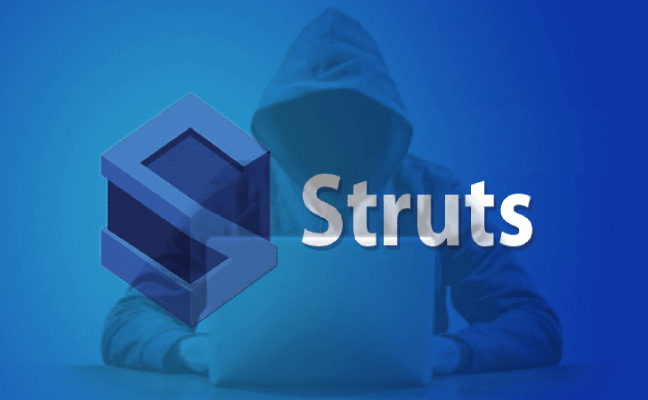

Notícias/Artigos Anteriores Crie uma aplicação Struts com um cadastro em múltiplos passos utilizando recursos do Struts 1.1...  Vulnerabilidade crítica afeta todas as versões do Apache Struts desde 2008